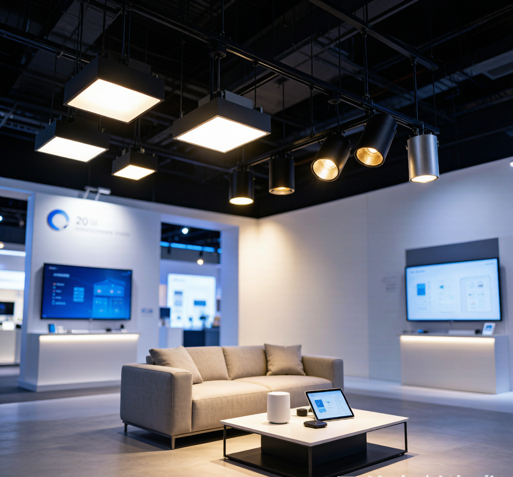

第31届广州国际照明展览会（光亚展）6月12日刚刚闭幕。25万平米、25个展馆，全球照明人齐聚广州。但今年的气氛跟往年明显不同——以前展商爱说"我们有什么黑科技"，今年几乎异口同声地说"这个方案用户真的能用"。
用一句话概括本届光亚展：智能照明行业正在从"技术能不能实现"转向"用户能不能长期稳定使用"。这是一个行业成熟的信号——对你我这种普通用户来说，意味着家里的智能灯终于要好用了。
以下是和普通消费者关系最大的四个趋势。
一、全屋智能进入"可用时代"：稳定性比功能多更重要
前几年的全屋智能，厂商都在比拼设备数量和功能丰富度。你家能连100个设备？我家能连200个。你支持50种场景？我支持100种。
结果呢？"全屋智能"成了"全屋智障"——设备掉线、联动卡顿、APP闪退、老人不会用、售后找不到人。小红书上吐槽全屋智能的帖子，随便一搜就是几十万篇。
今年光亚展上，风向彻底变了。
厂商不再炫技，而是重点展示三项能力：
- 本地化运行架构：即使断网，家里的灯光场景依然能正常运行。网关不依赖云端，本地执行自动化规则。
- 离线控制机制：Zigbee设备通过网关本地组网，Wi-Fi断了照样能通过App控制。这不是新概念，但2026年才真正普及到百元级产品。
- 模块化部署方案：不用一次买全套，可以先装客厅，再加卧室，逐步扩展。而且不同批次的设备能无缝兼容。
对普通用户的意义：你现在去装全屋智能，踩坑的概率比两年前低了不止一个量级。尤其是选择Zigbee协议的方案，本地化组网+低功耗+自修复Mesh网络，是目前普通家庭最成熟的选择。《2026中国智能家居市场研究报告》的数据也印证了这一点——Zigbee设备的用户满意度比Wi-Fi设备高出37个百分点。
一句话总结：2026年买智能灯，不是买功能列表，是买稳定性。
二、Matter协议规模化落地：不同品牌的设备终于能"说话"了
如果说2024-2025年的Matter还停留在"概念验证"阶段，那2026年光亚展就是Matter真正的"成人礼"。
本届展会上，多个品牌展出了基于Matter协议构建的跨平台生态体验——同一套灯具，既能在Apple Home里控制，也能在涂鸦智能App里操作，还能接入Google Home和Alexa。用户切换平台的成本降到几乎为零。
这意味着什么？
过去：买了A品牌的网关，就得用A品牌的灯具，想换B品牌？对不起，协议不兼容。这是典型的"生态绑架"——把你圈在一个品牌里，换品牌的成本高到不敢动。
现在：Matter协议把连接变成了基础设施。只要设备支持Matter，不管是哪个品牌，都能统一接入同一个平台。这不是"互联互通"的小改进，这是行业游戏规则的彻底改变。
不过也要泼点冷水：Matter目前主要解决的是设备连接层的统一，不是功能层的统一。比如你在Apple Home里能控制Matter灯具的开关和亮度，但高级功能（场景联动、自动化规则、能耗分析）还是得回到品牌自己的App里。
对普通用户的意义：2026年下半年起，买智能灯的时候注意看有没有Matter认证标志。有的话，你就不用担心"买错品牌以后换不了"的问题了。
三、AI让灯学会"理解人"：不用学App，灯自己会调
今年光亚展最让人意外的不是某款灯具的参数，而是交互方式的改变。
多个品牌展示了AI驱动的智能照明系统——不是让你在App里设置场景，而是系统自动学习你的习惯：几点起床、几点到家、看电视喜欢什么亮度、睡觉前习惯多暗的灯光。一两周后，灯就"知道"你要什么了。
这种变化看起来是功能升级，实际上是范式转移：
- 过去：人需要学习系统。你要懂协议、懂场景设置、懂自动化规则、懂App操作路径。门槛高到大部分用户直接放弃。
- 未来：系统开始理解人。AI根据行为习惯自动生成控制策略，你甚至不需要打开App。
一个现实案例：今年光亚展上，有一家厂商展示了一个叫"自然语言场景创建"的功能。你对手机说"晚上看电视的时候灯不要太亮，暖色调的"，系统就能自动创建一个"观影模式"，并关联到电视的开机状态。不需要手动设置任何参数。
对普通用户的意义：智能照明最大的痛点——"太复杂不会用"——正在被AI解决。如果你现在觉得智能灯上手难、App太多、不会设场景，再等半年，情况会大不一样。
四、健康照明从噱头变刚需：光不只用来照明，还影响你的睡眠和情绪
光亚展上另一个显著变化是：健康照明产品数量暴增。
全光谱、人因照明（Human-Centric Lighting）、节律照明——这些以前只在专业展区出现的技术，今年遍布各个展馆。甚至连传统灯具厂商都在展位上打出"RG0无蓝光""全光谱""类太阳光"的标签。
为什么突然火了？三个原因：
- 用户觉醒了。疫情后大众对健康的关注度飙升。"灯看着亮就行"的时代结束了，大家开始问"这个灯伤不伤眼""色温对睡眠有没有影响"。
- 标准在建立。2026年，护眼灯国家标准体系进一步完善，不再只考核照度和均匀度，开始引入"视疲劳缓解程度""近视防控效果"等临床指标。
- 技术成熟了。全光谱LED的成本在过去两年降了约40%。以前只有高端产品才有的"Ra98显色指数+全光谱"，现在三百块的筒灯也能做到。
健康照明的核心是什么？ 不是"不频闪""无蓝光"这些基础指标——那是及格线。真正的健康照明是模拟自然光变化：早晨高色温的冷白光帮你醒来，白天保持高照度维持专注力，傍晚色温逐渐降低帮你分泌褪黑素，睡前暖黄的暗光告诉你该睡了。
这种"人因照明"方案，以前只在高档酒店和高端住宅里出现。2026年光亚展上，已经有面向普通家庭的整套解决方案，整套下来不超过5000元。
对普通用户的意义：如果你正在装修或者计划换灯，把预算分一部分给"全光谱""高显色指数""可调色温"三个关键词。这是目前性价比最高的健康照明投资。
一个贯穿所有趋势的核心变化
四个趋势背后，有一个共同的底层逻辑：行业正在从"技术驱动"转向"价值驱动"。
"技术驱动"的时代，厂商比拼的是参数——多少流明、多少Ra值、支持多少协议、能连多少设备。参数堆得越来越高，用户却越来越困惑："参数那么好，为什么我的灯还是不好用？"
"价值驱动"的时代，厂商开始回答真问题——用户需要什么？怎么让灯稳定运行？怎么让老人小孩都会用？怎么让灯光真正改善生活质量？
这不是"降级"，这是"成熟"。 当智能照明不再只是科技爱好者的玩具，而开始进入普通家庭、老人和儿童的日常生活时，稳定性和易用性的重要性远远超过参数表。
光亚展2026传递的信号很明确：智能照明行业不炫技了。对消费者来说，这恰恰是最好的消息。
本文参考：2026广州国际照明展览会（光亚展）公开资料、千家网光亚展观感分析、《2026中国智能家居市场研究报告》、IDC智能家居研究数据。配图均为原创技术图解。